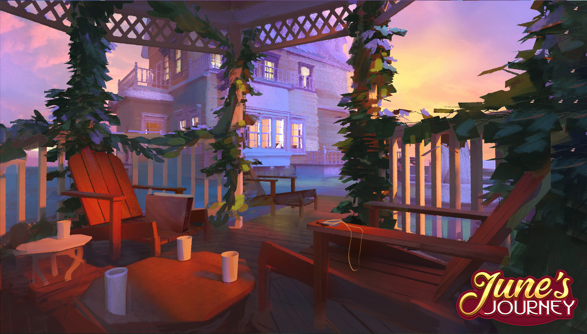
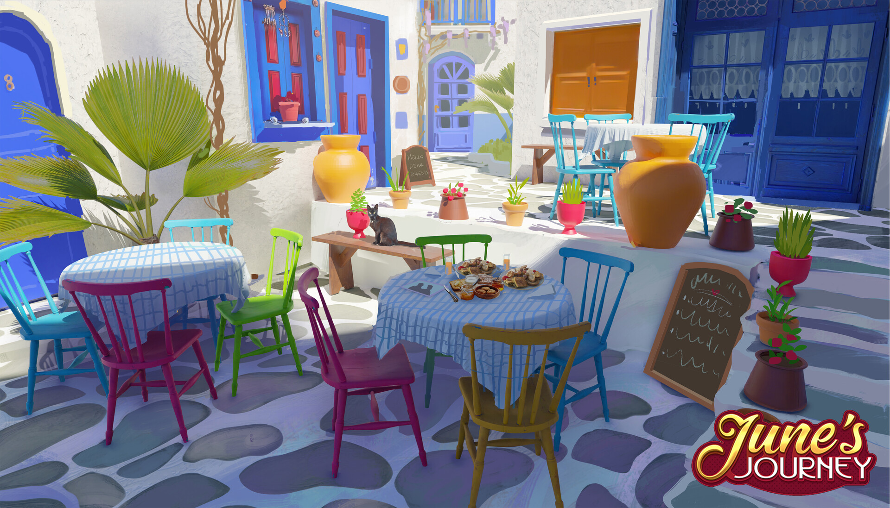
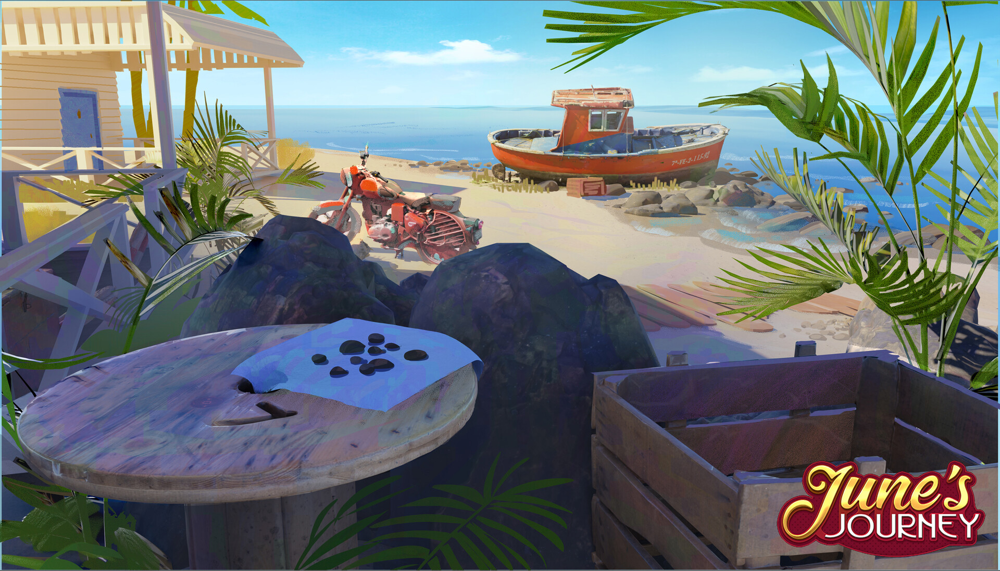
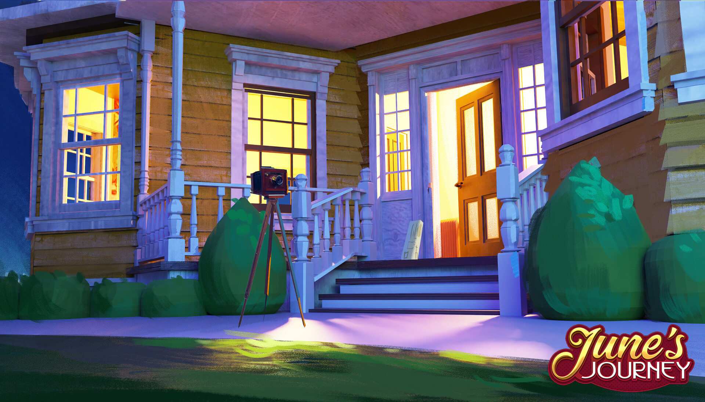
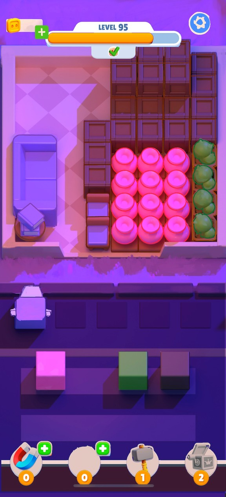

Editorial Project Layout
Original mosaic preview → click to reveal editorial sections with 3 artwork ratio layouts: ultrawide, medium, and slim. Mix within a single project for a case-study feel.
Layout Showcase
All 3 editorial section types



Dark Forest — Action scene showcasing the contrast between deep shadows and saturated magical lighting.
Led visual development and art direction for an indie action-adventure title. Defined the game's entire visual identity — from early concepts through to production-ready assets. The challenge was building a cohesive dark-fantasy world that felt atmospheric without alienating casual players.
Deep shadows paired with saturated accent lighting created the distinctive look. Every key moment illustration needed to convey both narrative stakes and the game's tonal balance between darkness and warmth.
Evening Terrace — Warm lighting draws the eye through a layered 1920s setting while concealing 35+ interactive objects.
Developed a layered composition system — foreground, midground, background — with colour temperature and directional lighting guiding the player's eye naturally through each scene.
Each scene went through 3–4 rounds of gameplay testing to ensure objects were findable but not obvious.

Victorian Porch — Same architecture, completely different mood. Warm interior glow against a cool night sky.
Player engagement metrics exceeded the team average by 15%. The layered composition approach was adopted as the studio standard for all new scene production.
Contributed 20+ scenes across 3 seasonal updates, each maintaining the visual quality bar while meeting tight production deadlines.

Warm palette with wood textures — targeting a cosy, inviting feel for the casual audience.
Cool palette with gem accents — more vibrant and energetic for a younger demographic.
Designed the complete visual identity and UI system for a casual puzzle game. Explored multiple skin variants to find the right balance between personality and usability.
Every element was tested at actual phone resolution to ensure touch targets met accessibility standards while maintaining the playful aesthetic.
Built a modular component library allowing rapid reskinning. Colour tokens, corner radii, and shadow values are all controlled from a single design token file.
This approach cut iteration time from days to hours — the team could test new visual directions within a single sprint.
Modular UI pieces — buttons, cards, overlays — all deriving from the same token system.
Final implementation showing the UI system in context during active gameplay.